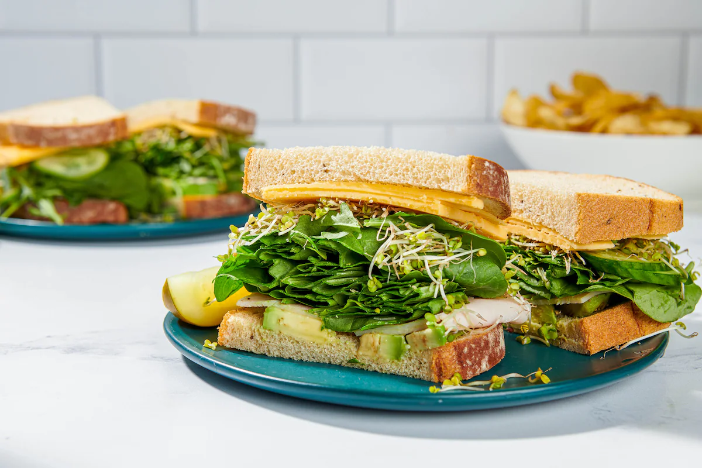

Diner-Style Club Sandwich

Description
A sandwich is the epitome of lazy cooking, but this one is more special. It's never a bad idea to just bake a whole batch of bacon early in the week, and if you've done that, you're all set here. But even if you skip the bacon, you'll still have a great, and great-looking, meal.
Ingredients
- 6 strips thin, center-cut bacon
- 6 slices white bread, lightly toasted
- 1/4 cup mayonnaise, plus more as needed
- 2 large romaine or iceberg lettuce leaves, plus more as needed
- 1 beefsteak tomato (5 ounces), thinly sliced
- 4 ounces thinly sliced roasted turkey
- Fine Salt
- Groung Pepper
- Potato chips, for serving (optional)
- Position a rack in the middle of the oven and turn the oven on, setting it at 425 degrees
- Arrange the bacon strips in a single layer on a large, rimmed baking sheet and transfer to the oven for 20 minutes
- While the bacon is roasting, gather and prepare the remaining sandwich ingredients: the bread, mayonnaise, lettuce, tomato, turkey, and salt and pepper.
- Place a lettuce leaf on 2 of the slices; top each with a tomato slice, then 3 bacon halves and a quarter of the turkey; and season lightly with salt and pepper
- Top with a second slice of bread, mayonnaise side down. Gently spread mayonnaise on the top slice of bread. Repeat layering the ingredients in the same order on top of this slice of bread.
- Done!